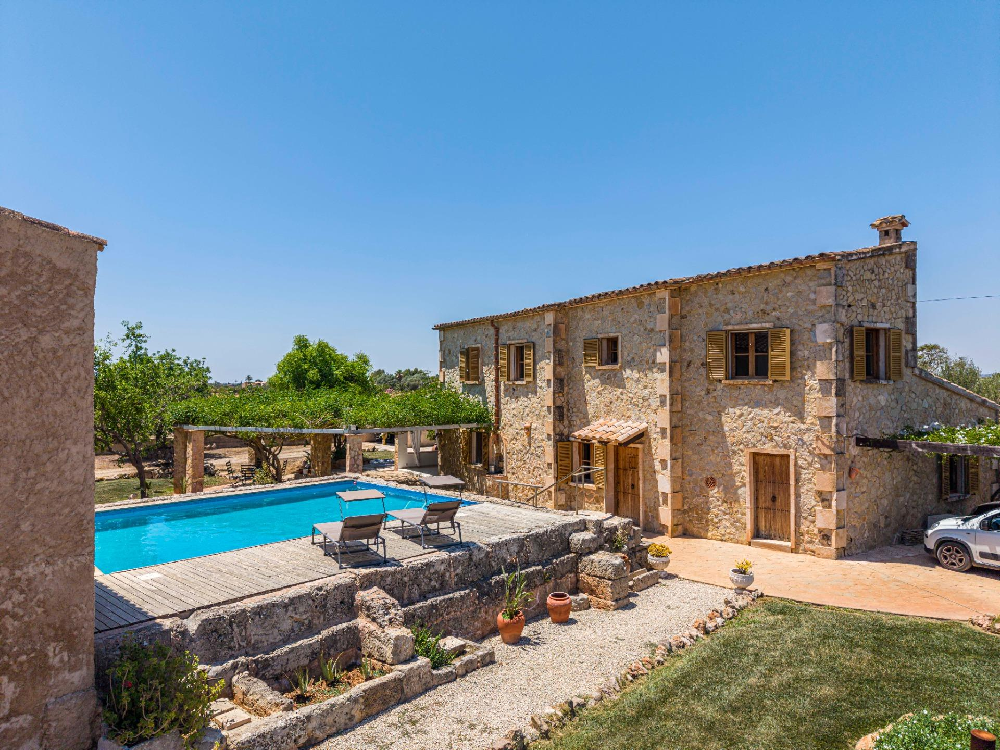

€949.000
Campos countryside, Mallorca
Open the listingPreferred south Campos pocket: honey marès exposed-stone main house + annex, vine-covered pergola, built private saltwater pool on a raised stone deck, solar on the outbuilding roof, private well, double garage and 39 olive trees on a fully fenced ~22,000 m² plot. Legal rustic finca (agency wording) — finished character compound, not a reform shell. €949k is a clear bargain vs €1.2M–€1.8M Campos/Felanitx stone-with-pool comps.
Opened 5 Sep 2026. Gestpropiedad ref 05lf044 / 05LF044; price 949.000€; 4 bed / 4 bath; 607 m² built; 22,000 m² plot; year 1997; energy B; updated 22 Jul 2026. Photos (apinmo 29542168) confirm exposed stone + finished saltwater pool. Distinct from board campos (W-04AZ31 townhouse) and son-negre (Felanitx). Not on prior board.